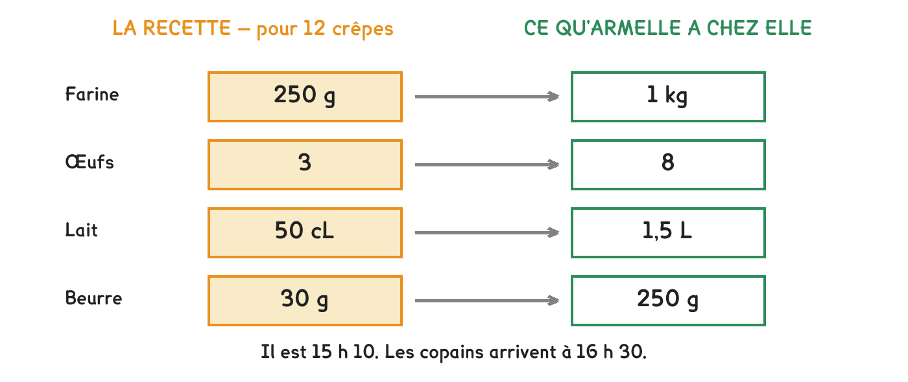

CAP Électricien · 1re année
Quatre ingrédients, quatre réponses différentes. Celle qui compte est la plus petite : c'est l'ingrédient limitant.
2 exercices · 4 items d'entraînement · 2 figures
Savoirs travaillés
Il est 15 h 10, les copains arrivent à 16 h 30. La recette donne 12 crêpes avec 250 g de farine, 3 œufs, 50 cL de lait et 30 g de beurre.
Armelle a : 1 000 g de farine, 8 œufs, 1,5 L de lait, 250 g de beurre.

Chaque ingrédient donne son propre nombre de crêpes. Celui qui en donne le moins arrête tout le monde : c’est l’ingrédient limitant.
On ne cherche pas combien il faut : on cherche ce que chaque ingrédient autorise, tout seul, comme s’il n’y avait que lui. Quatre ingrédients donnent donc quatre nombres de crêpes.
Et c’est le plus petit des quatre qui décide : dès qu’un ingrédient manque, la production s’arrête, même s’il reste des kilos de tout le reste.
Série · CN
Exercice · CN
Des quatre ingrédients, lequel limite le nombre de crêpes ?
Ne regarder qu’un seul ingrédient. La farine dit 48, et c’est faux : il n’y a pas assez d’œufs pour 48 crêpes. La réponse est toujours le plus petit des quatre nombres.
Exercice · CN
Elle cuit 2 crêpes par fournée, 2 minutes chacune. Combien de minutes pour les 32 crêpes ?
Devant plusieurs ressources et une seule production, on calcule ce que chacune permet, et on garde la plus petite. Le même raisonnement sert au chantier : le câble, le disjoncteur, la prise — c’est le plus faible qui fixe la limite.
Ce site rappelle la méthode. Aucun corrigé, rien n'est noté.